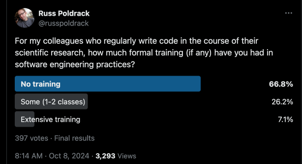
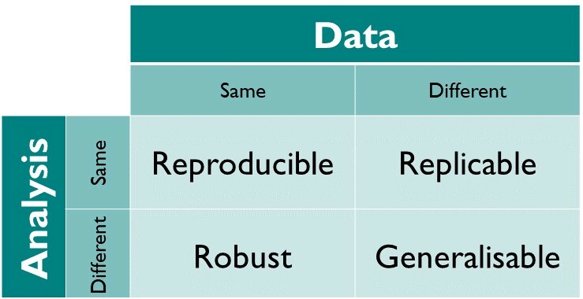
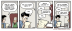

2 Introduction
There was a time when becoming a scientist meant developing and honing a set of very specific laboratory skills: a cell biologist would learn to culture cells and perform assays, a materials scientist would learn to use high-powered microscopes, and a sociologist would learn to develop surveys. Each might also perform data analysis during the course of their research, but in most cases this was done using software packages that allowed them to enter their data and specify their analyses using a graphical user interface. While many researchers knew how to program a computer, and for some fields it was necessary (e.g., to control recording instruments or run computer simulations), it was relatively uncommon for most scientists to spend a significant proportion of their day writing code.
How times have changed! In nearly every part of science today, working at the highest level requires the ability to write code. While the preferred languages differ between different fields of science, it is rare for a graduate student to make it through graduate school today without having to spend some time writing code. Whereas statistics classes before 2000 almost invariably taught the topic using statistical software packages with names that quickly becoming forgotten (SPSS, JMP), most graduate-level statistics classes are now taught using programming languages such as R, Python, or Stata. The ubiquity of code has been accelerated even further by the increasing prevalence of machine learning techniques in science. These techniques, which bring unprecedented analytic power to scientists, can only be tapped effectively by researchers with substantial coding skills.
The increasing prevalence of coding in scientific practice contrasts starkly with the lack of training that most researchers receive in software engineering. By “software engineering” I don’t mean introductory classes in how to code in a particular language. Rather, I am referring to the set of practices that have been developed within the fields of computer science and computer engineering that aim to improve the quality and efficiency of the software development process and the resulting software products. A glimpse into this field can be gotten from examining the Software Engineering Body of Knowledge (SWEBOK), first published in 2004 and updated most recently in 2024. While much of SWEBOK focuses on topics that are primarily relevant to large commercial software projects, it also includes numerous sections that are relevant to anyone writing code that aims to function correctly, such as how to test code for validity and how to maintain software once it has been developed.
I have spent the last decade giving talks regularly on scientific coding practices. I often start by asking how many researchers in the audience have received software engineering training. In most audiences the proportion of people raising their hands is well below 1/4; this is true both for the audiences of neuroscientists and psychologists that I usually speak to, as well as researchers from other fields that I occasionally speak to. This impression is consistent with the results of a poll that I conducted on the social media platform X, which showed that the majority of scientists responded that they had received no training in software engineering (see Figure 1.1).

Thus, a large number of scientists today are operating as amateur software engineers.
2.1 Why poor software engineering is a threat to science
There is no such thing as bug-free code, even in domains where it really matters. In 1999 a NASA space probe called the Mars Climate Orbiter was destroyed when measurements sent in the English unit of pound-force-seconds were mistakenly interpreted as being in the metric unit of newton-seconds, causing the spacecraft to be destroyed when it traveled too deep into the Martian atmosphere. The total amount lost on the project was over $300 million. Another NASA disaster occurred just a few months later when the Mars Polar Lander lost communication during its landing procedure on Mars. This is now thought to be due to software design errors rather than to a bug per se:
The cause of the communication loss is not known. However, the Failure Review Board concluded that the most likely cause of the mishap was a software error that incorrectly identified vibrations, caused by the deployment of the stowed legs, as surface touchdown. The resulting action by the spacecraft was the shutdown of the descent engines, while still likely 40 meters above the surface. Although it was known that leg deployment could create the false indication, the software’s design instructions did not account for that eventuality. Wikipedia.
Studies of error rates in computer programs have consistently shown that code generated by professional coders has an error rate of 1-2 errors per 100 lines of code, regardless of the particular application domain (Horner & Symons 2019). Interestingly, the most commonly reported type of error in the analyses reported by Horner and Symons was “Misunderstanding the specification”; that is, the problem was correctly described but the programmer incorrectly interpreted this description. Other common types of errors included numerical errors, logical errors, and memory management errors.
If professional coders make errors at a rate of 1-2 errors per hundred lines, it seems very likely that the error rates of amateur coders writing software for their research would be substantially higher. While not all coding errors will make a difference in the final calculation, it’s likely that many will (Soergel 2014). My group has in fact experienced this within our own work (As described in this blog post). In 2020 we posted a preprint that criticized the design of a particular aspect of a large NIH-funded study, the Adolescent Brain Cognitive Development (ABCD) study. This dataset is shared with researchers, and we also made the code openly available via GitHub. The ABCD team eagerly reviewed our code, and discovered an error due to an overly complex index scheme with double negatives that led to incorrect indexing of a data frame and thus changed the results. This fortunately happened while the paper was under review, so we were able to notify the journal and modify the paper to reflect the bug fix; if we had not made the code publicly available then the error would either have never been caught, or would have been caught after publication, leading to the need for a published correction.
This was a minor error, but there are also prominent examples of scientific claims that suffered catastrophic errors due to software errors. The best known is the case of Geoffrey Chang, a structural biologist who published several papers in the early 2000’s examining the structure of a protein called the ABC transporter. Chang’s group had to retract 5 papers, including 3 published in the prestigious journal Science, after learning that their custom analysis code had mistakenly flipped the sign of two columns of data, which ultimately led to an erroneous estimate of the protein structure (Miller 2006). This is an example of how a very simple coding mistake can have major scientific consequences.
2.2 Is software development still important in the age of AI?
It would be an understatement to say that coding has undergone a revolution since the introduction of coding assistance tools based on artificial intelligence (AI) systems. While some degree of assistance has long been available (such as smart autocompletion by code editors), the introduction of Copilot by GitHub in 2021 and its subsequent incorporation into a number of integrated development environments (IDEs) brought a new level automation into the coding process. There are likely very few coders today who have not used these tools or at least tried them out. The presence of these tools has led to some breathless hand-wringing about whether AI will eliminate the need for programmers, but nearly all voices on this topic agree that while programming will change drastically with the introduction of AI assistance, the ability to program will remain a foundational skill for years to come.
In early 2023 the frenzy about AI reached a boiling point with the introduction of the GPT-4 language model by OpenAI. Analyses of early versions of this model (Bubeck et al. 2023) showed that its ability to solve computer programming problems was on par with human coders, and much better than the previous GPT-3 model. Later that year GPT-4 became available as part of the GitHub CoPilot AI assistant, and those of us using Copilot saw some quite astonishing improvements in the performance of the model compared to the GPT-3 version. I had been developing a workshop on software engineering practices for scientists, and the advent of this new tool led to some deep soul-searching about whether such training would even be necessary given the power of AI coding assistants. My colleagues and I (Poldrack et al. 2023) subsequently analyzed the ability of GPT-4 to solve scientific coding problems. I will describe these experiments in more detail in Chapter 5, but in short, they showed that while GPT-4 was able to solve many coding problems quite effectively, it was far from being able to solve common coding problems completely on its own. Coding assistants have continued to improve over time, but as I will discuss throughout the book, they still require close attention by the user to ensure that they function properly.
I believe that AI coding assistants have the potential to greatly improve the experience of coding and to help new coders learn how to code effectively. However, my experiences with AI-assisted coding have also led me to the conclusion that software engineering skills will remain at least as important in the future as they are now. First, and most importantly, the hardest problem in programming is not the generation of code; rather, it is the decomposition of the problem into a set of steps that can be used to generate code, and the expression of those steps in a way that is clear enough to allow the code to correctly solve the problem. The motivation for why coding will remain as an essential skill even if code is no longer being written by humans was expressed by Robert Martin in the most recent edition of his book Clean Code:
One might argue that a book about code is somehow behind the times—that code is no longer the issue; that we should be concerned about AI, large language models (LLMs), and requirements instead. Indeed, some have suggested that we are close to the end of code. That soon, all code will be generated instead of written. That programmers simply won’t be needed, because businesspeople will generate programs from specifications—or prompts. Nonsense! We will never be rid of code, because code represents the details of the requirements. At some level, those details cannot be ignored or abstracted; they have to be specified. And specifying requirements in such detail that a machine can execute them is programming. Such a specification is code. (Martin 2025)
For simple common problems AI tools may be able to generate a complete and accurate solution, but for the more complex problems that most scientists face, a combination of coding skills and domain knowledge will remain essential to figuring out how to decompose a problem and express it in a way that a computer can solve it. Even if that involves generating prompts for a generative AI model or being interviewed by a coding agent rather than generating code de novo, a deep understanding of the generated code will be essential to making sure that the code accurately solves the problem at hand.
Second, scientific coding requires an extra level of accuracy. Scientific research forms the basis for many important decisions in our society, from which medicines to prescribe to how effective a particular method for energy generation will be. The technical report for GPT-4 made it clear that we should think twice about an unquestioning reliance upon AI models in these kinds of situations:
Care should be taken when using the outputs of GPT-4, particularly in contexts where reliability is important. (OpenAI et al. 2024)
The goal of this book is to show you how to generate code that can reliably solve scientific problems while taking advantage of all of the positive benefits of AI coding assistants.
2.3 Why better code can mean better science
One of my main motivations for writing this book is to help make science better. In particular, we want to increase the reproducibility of scientific results. But what does reproducibility mean? And for that matter, what does it even mean for an activity to count as “science”?
This seemingly simple question turns out to be remarkably difficult to answer in a satisfying way. Although it is easy to give examples of forms of inquiry that we we think are scientific (astrophysics, molecular biology) and forms that we think are not (astrology, creationism), defining an “essence” of science has eluded philosophers of science who have examined this question (known as the “demarcation problem”) over the last century. One answer is that there are a set of features that together distinguish between scientific and non- or pseudo-scientific enterprises. Some of these have to do with the social characteristics of the enterprise, best described in terms of the features that are often found in pseudoscience, such as an overriding belief in authority and the willingness to disregard information that contradicts the theory. But nearly everyone agrees that an essential aspect of science is the ability to reproduce results reported by others. The idea of replication as a sine qua non of science goes back to the 17th Century, when Christian Huygens built an air pump based on the designs of Robert Boyle and demonstrated a phenomenon called “anomalous suspension” that initially could not be replicated by Boyle, leading Huygens to ultimately travel to London and demonstrate the phenomenon directly (Shapin et al. 1985). Throughout the development of modern science, the ability for researchers to replicate results by other scientists has been a foundational feature of science.
An example serves to show how well science can work when the stakes are high. In 1989, the chemists Martin Fleischmann and Stanley Pons reported that they had achieved nuclear fusion at temperatures much lower than usually thought to be required. If true this would have been a revolutionary new source of energy for the world, so scientists quickly began to try to reproduce the result. Within just a few months, the idea of “cold fusion” was fully discredited; while the New York Times labeled the cold fusion work as an example of “pathological science”, the entire episode actually showed how well science can sometimes self-correct.
Cold fusion was a case in which science worked as it should, with other researchers quickly trying (and in this case failing) to reproduce a result. However, there are other cases in which scientific claims have lingered for years, only to be discredited when examined deeply enough. Within psychology, a well known example comes from the study of “ego depletion”, a phenomenon in which exerting self control in one domain was thought to “deplete” the ability to exert self control in a different domain. This phenomenon was first reported in 1998 by a group of researchers who reported that giving people a difficult mental task to solve made them less able to resist eating a cookie on their way out of the laboratory, compared to people who didn’t have to solve the task. Hundreds of papers were published on the phenomenon over the subsequent decades, mostly using more simple laboratory tasks that didn’t require a kitchen and oven in the laboratory to bake cookies. Nearly all of these subsequent studies reported to have found ego depletion effects. But two large-scale efforts to reproduce the finding, including data from more than 5,000 participants, have shown that the effect is so small as to likely be non-existent. Below I will talk more about the reasons that we now think these kinds of irreproducible findings can come about.
2.3.1 What does “reproducibility” mean?
There are many different senses of the term “reproducibility”, which can cause confusion. A framework that I like for this concept comes from the Turing Way, an outstanding guide for open and reproducible science practices. This framework, shown in Figure 1.2, distinguishes between whether the data and analysis are either same or different between two analyses.

People sometimes get hung up on these terminological differences, but that’s often just a distraction from the central point: We want to ensure that scientific research generates reliable answers to questions that can generalize to a broad range of situations beyond the initial study.
2.3.2 A reproducibility “crisis”
Starting in the early 2010’s, scientists became deeply concerned about whether results in their fields were reproducible, focusing primarily on the concept of replication; that is, whether another researcher could collect a new dataset using the same method and achieve the same answer using the same analysis approach. While this concern spanned many different domains of science, the field of psychology was most prominent in tackling it head-on. A large consortium banded together in an attempt to replicate the findings from 100 published psychology papers, and the results were startling (Open Science Collaboration 2015): Whereas 97 of the original studies had reported statistically significant results, only 36% of the replication attempts reported a significant finding. This finding led to a firestorm of criticism and rebuttal, but ultimately other attempts have similarly shown that a substantial portion of published psychology findings cannot be replicated, leading to what was termed a “reproducibility crisis” in psychology (Nosek et al. 2022). Similar efforts subsequently uncovered problems in other areas, such as cancer biology (Errington et al. 2021), where it was only possible to even complete a replication of about 1/4 of the intended studies due to a lack of critical details in the published studies and lack of cooperation by about 1/3 the original authors.
As this crisis unfolded, attention turned to the potential causes for such a lack of reproducibility. One major focus was the role of “questionable research practices” (QRPs) - practices that have the potential to decrease the reproducibility of research. In a prominent 2011 article titled “False Positive Psychology”, (Simmons et al. 2011) showed that commonly used research practices had the potential to substantially inflate the false positive rates of research studies. Given the prominence of statistical hypothesis testing and the bias towards positive and statistically significant results (usually at p <.05) in the psychology literature, these practices were termed “p-hacking”. Many of the efforts to improve reproducibilty have focused on reducing the prevalence of p-hacking, such as the pre-registration of hypotheses and data analyses.
2.3.3 Open science and reproducibility
There is a well known quote from Jonathan Buckheit and David Donoho (Buckheit & Donoho 1995) that highlights the importance of openly available research objects in science:
An article about computational science in a scientic publication is not the scholarship itself, it is merely advertising of the scholarship. The actual scholarship is the complete software development environment and the complete set of instructions which generated the figures.
There was surprisingly little focus on code during the reproducibility crisis, but it is clear that there are problems even with what would seem like the easiest quadrant of the Turing Way framework: namely, the ability to reproduce results given the same data and same analysis methods. Tom Hardwicke, Michael Frank and colleagues have examined the ease of reproducing results from psychology papers where the data were openly available, and the results were not encouraging. In one analysis (Hardwicke et al. 2021), they attempted to reproduce the published results from 25 papers with open data. Their initial analyses showed major numerical discrepancies in about 2/3 of the papers; strikingly, for about 1/4 of the papers they were unable to reproduce the values reported in the original publication even with the help of the authors!
It is increasingly common for researchers to share both code and data from their published research articles, in part due to incentives such as “badges” that are offered by some journals. However, in our experience, it can be very difficult to actually run the shared code, due to various problems that limit the portability of the code. Throughout this book I will discuss the tools and techniques that can help improve the portability of shared code and thus increase the reproducibility of published results. I will also note that AI coding tools turn out to be particularly good at fixing the issues that often occur when trying to run someone else’s code, making them an important tool for reproducibility.
2.3.4 Bug-hacking
A particular concern is that not all software errors are created equal. Imagine that a graduate student is comparing the performance of a new machine learning method with their implementation of a previous method. Unbeknownst to them, their implementation of the previous method contains an error. If the error results in poorer performance of the previous method (thus giving their new method the edge), then they are less likely to go looking for a bug than they might be if the error caused performance of the competing method to be inaccurately high. I have referred to this before as “bug-hacking”, and this problem is nicely exemplified by the comic strip shown in Figure 1.3.

There are multiple apparent examples of bug-hacking in the literature. One example was identified by Mark Styczynski and his colleagues (Styczynski et al. 2008) when they examined a set of substitution matrices known as the BLOSUM family that are commonly used in bioinformatics analyses. A set of these matrices were initially created and shared in 1992 and widely used in the field for 15 years before Styczynski et al. discovered that they were in error. These errors appeared to have significant impact on results, but interestingly the incorrect matrices actually performed better than the correct matrices in terms of the number of errors in biological sequence alignments. It seems highly likely that a bug that had substantially reduced performance would have been identified much earlier.
Another example comes from our my field of neuroimaging. A typical neuroimaging study collects data from hundreds of thousands of three-dimensional volumetric pixels (know as voxels) within the brain, and then performs statistical tests at each of those locations. This requires a correction for multiple tests to prevent the statistical error rate from skyrocketing simply due to the large number of tests. There are a number of different methods that are implemented in different software packages, some of which rely upon mathematical theory and others of which rely upon resampling or simulation. One of the commonly used open source software packages, AFNI, provided a tool called 3DClustSim that used simulation to estimate a statistical correction for multiple comparisons. This tool was commonly used in the neuroimaging literature, even by researchers who otherwise did not use the AFNI software, and the lore developed that 3DClustSim was less conservative than other tools. When Anders Eklund and Tom Nichols (Eklund et al. 2016) analyzed the performance of several different tools for multiple test correction, they identified a bug in the way that the 3DClustSim tool performed a particular rescaling operation, which led in some cases to inflated false positive rates. This bug had existed in the code for 15 years, and almost certainly was being leveraged by researchers to obtain “better” results (i.e., results with more seeming discoveries, many of which would have been false). Had the bug led to much more conservative results compared to other standard methods, it is likely that users would have complained and the problem would have been investigated; in the event, no users complained about getting more apparent discoveries in their analyses.
2.3.5 How not to fool ourselves
In his 1974 commencement address at Caltech, the physicist Richard Feynman famously said “The first principle is that you must not fool yourself — and you are the easiest person to fool.” One of the most powerful ways that scientists have developed to prevent us from fooling ourselves is blinding - that is, preventing us from seeing or otherwise knowing information that could lead us to be biased towards our own hypotheses. You may be familiar, for example, of the idea of a “double-blind” randomized controlled trial in medical research, in which participants are randomly assigned to a treatment of interest or a control condition (such as a placebo); the “double-blind” aspect of the trial refers to the fact that neither the patient nor the researcher knows who has been assigned to the treatment versus control condition. Assuming that blinding actually works (which can fail, for example, if the treatment has strong side effects), this can give results that are at much lower risk of bias compared to a trial in which the physician or patient know what their condition is. In physics, researchers will regularly relabel or otherwise modify the data to prevent the researcher from knowing whether they are working with the real data versus some other version. This kind of blinding helps researchers avoid fooling themselves (MacCoun & Perlmutter 2015).
A major concern in the development of software for data analysis is that the researcher will make choices that are data-dependent. Andrew Gelman and Eric Loken (Gelman & Loken 2014) referred to a “garden of forking paths”, in which the researcher makes seemingly innocuous data-driven decisions about the methods to apply for analysis, resulting in an injection of bias into the analysis. One commonly recommended solution for this is “pre-registration”, in which the methods to be applied to the data are pre-specified before any contact is made with the data (Nosek et al. 2018). There are several platforms (including the Open Science Framework, ClinicalTrials.gov, and AsPredicted.org, depending on the type of research) that can be used to pre-register analysis plans and code prior to their application to real data. Pre-registration has been used in medical research for more than two decades, and its introduction was associated with a substantial reduction in the prevalence of positive outcomes in clinical trials, presumably reflecting the reduction in bias (Kaplan & Irvin 2015). However, pre-registration can be challenging when the data are complex and the analytic methods are not clear from the outset. How can a researcher avoid bias while still making sure that the analyses are optimal for their data? There are several possible solutions, whose applicability will depend upon the specific features of the data in question.
One solution is to set aside a portion of the data (which we call the “discovery” dataset) for code development, holding aside a “validation dataset” that remains locked away until the analysis code is finalized (and preferably pre-registered). This allows the researcher to use the discovery dataset to develop the analysis code, ensuring that the code is well matched to the features of the dataset. As long as contact with the validation dataset is scrupulously avoided during the discovery phase, this can prevent analyses of the validation dataset from being biased by the specific features of those data. The main challenge of this approach comes about when the dataset is not large enough to split into two parts. One adaptation of this approach is to use pilot data or data that were discarded in the initial phase of data cleaning (e.g., due to data quality issues) as the discovery sample, realizing that these data will likely differ in systematic ways from the validation set.
2.4 Beyond reproducibility: Getting valid answers
Our discussion so far has focused on reproducibilty, but it is important to point out that a result can be completely reproducible yet wrong. A degenerate example is a data analysis program that always outputs zeros for any analysis regardless of the data; it will be perfectly reproducible, with the same data or different data, yet also perfectly wrong! This distinction goes by various names; I will adopt the terminology of “reliability” versus “validity” that is commonly used in many fields including psychology. A measurement is considered to be reliable if repeated measurements of the same type give similar answers; a measurement is perfectly reliable if it gives exactly the same answer each time it is performed, and increasing error variance leads to lower reliability. On the other hand, a measurement is considered to be valid if it accurately indexes the underlying feature that it is intended to measure; that is, the measure is unbiased with respect to the ground truth.
The distinction between reliability and validity implies that we can’t simply focus on making our analyses reproducible; we also need to make sure that they reproducibly give a valid answer. In Chapter 9 I will talk in much more detail about how to validate computational analyses using simulated data.
2.5 Guiding principles for this book
The material that I will present in this book reflects a set of guiding principles:
Improving the quality of research code is a direct way to enhance the reliability of scientific research.
Used properly, AI coding tools can improve the quality of research code.
Scientists bear the ultimate responsibility for ensuring that their code provides answers that are both reliable and valid.
The scientist needs to be able to understand and explain any code that they use in their research.
Scientists have a responsibility to make their work as open and reproducible as possible. Open source software and platforms for open sharing of research objects including data and code are essential to making this happen.
These principles imply that the ability to understand code will remain important even if one is using coding agents to generate it, and that the user of AI coding tools for science also needs the ability to effectively test and validate their code. These are exactly the skills that this book aims to build.